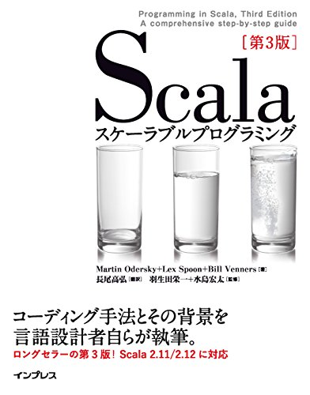
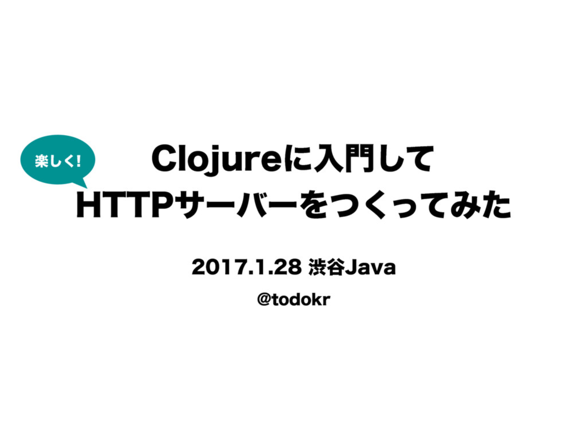

Scalaによる
サービス開発現場での継続的
リファクタリングの実践
株式会社ビズリーチ
岩松竜也
岩松竜也
株式会社ビズリーチ HRMOS事業部
2015年4月 新卒入社
入社以来 HRMOS事業部でATS※開発に携わる
入社以前はC#で医療システムのアルバイトなど
最近よく「わかまつ」と間違えられます。😡
とは
人が活躍する未来は、企業が人を活用する未来。
「HRMOS（ハーモス）」は、企業の人事を可視化し、
戦略人事を実現するソリューション。
AI（人工知能）が人材活用の最適化をサポートし、
企業の成長に貢献します。
採用管理とは
HRテック（HR × Technology）で
採用を強くする
HRMOS採用管理は、業務をシンプルにし、
日々のオペレーションからあなたを解放します。
採用活動のデータを可視化・分析し、
戦略的な人材獲得を実現します。
今日話す事
-
Scala素人がリファクタリングをするまで
-
機能開発優先の中どうやってリファクタリングを進めたか
-
試行の結果、現在
こんなことありませんか？
参入したプロジェクトのコードが汚すぎる。
ストレスがたまるのでついカッとなってリファクタリングしてやった。
そんなことはなかった
というかScalaが全然わかっていませんでした。
ぜんぜん
わからない
俺たちは
雰囲気で
Scalaを書いている
どうやってScalaを学んだか
せっかくなのでご参考にどうぞ
こんなことしました

Scalaスケーラブルプログラミング第3版 ¥4,600
読書会
- 意地でも継続する。ちゃんとやりきる。
- 分からないところをリストアップ・質問する
- コードサンプルは全てさわる
こんなことしました

一緒にやってた同期の発表が詳しい
車輪の再発明をしてみる
- HTTPサーバをつくってみた
- Qiita, StackOverflow禁止、RFC、既存実装のみ参照可能
- 気付いたら弊社の新卒研修になってた